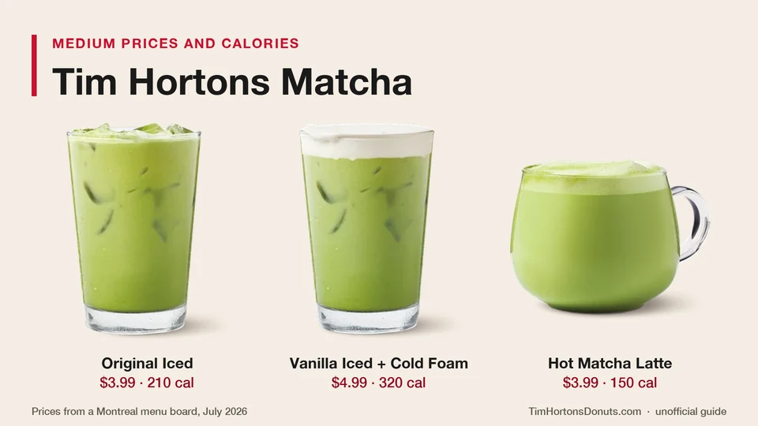

Unofficial fan guide - not affiliated with Tim Hortons
Five matcha lattes, $3.99 to $4.99 for a medium, 130 to 320 calories. Here is the full lineup, the sugar numbers and what reviewers thought.
Full Menu / Blog / Tim Hortons Matcha

Tim Hortons sells five matcha lattes across Canada: a hot Matcha Latte, a hot Vanilla Matcha Latte, and Original, Unsweetened and Vanilla Iced Matcha Lattes. The lineup launched on July 22, 2026. A medium costs about $3.99 to $4.99 and has 130 to 320 calories.
Matcha was one of Tim Hortons' main drink launches of summer 2026, and it is sold at participating restaurants. This page covers the full lineup, what each drink costs, the calories and sugar from Tim Hortons' own menu data, what reviewers thought and which one to order.
Tim Hortons has five core matcha drinks: three iced and two hot. All five launched together on July 22, 2026, at participating restaurants across Canada.
Matcha was not completely new to the chain. Daily Hive reported that matcha drinks had already been sold at Tim Hortons' "Urban Format" restaurants in Toronto and Montreal before the national launch.
Yes. Tim Hortons added a Strawberry Iced Matcha Latte and a Hot Strawberry Matcha Latte on September 23, 2026. A medium has 310 calories iced and 220 calories hot. Our new menu items page tracks each launch, and the fall menu page lists what else arrived that month.
A medium Tim Hortons matcha latte costs $3.99 to $4.99 before tax. The plain drinks are $3.99, and vanilla and cold foam cost more.
| Drink | Medium price | Medium calories |
|---|---|---|
| Original Iced Matcha Latte | $3.99 | 210 |
| Unsweetened Iced Matcha Latte | $3.99 | 130 |
| Hot Matcha Latte | $3.99 | 150 |
| Hot Vanilla Matcha Latte | $4.49 | 240 |
| Vanilla Iced Matcha Latte with Cold Foam | $4.99 | 320 |
These are the menu-board prices MTL Blog recorded at a Montreal drive-thru on launch day, July 22, 2026. A menu tracker lists the three $3.99 drinks at $3.49 for a small and $4.49 for a large. Tim Hortons does not publish a national price list, and prices vary by restaurant and province, so check the app for yours.
For comparison, a medium latte is $3.69 on our coffee menu page. A matcha latte costs about 30 cents more than the espresso version.
A Tim Hortons matcha latte has 100 to 370 calories, depending on the drink and the size. The Unsweetened Iced Matcha Latte is the lightest, and the Vanilla Iced Matcha Latte with Cold Foam is the heaviest.
| Drink | Small | Medium | Large | Sugar (medium) | Protein (medium) |
|---|---|---|---|---|---|
| Unsweetened Iced Matcha Latte | 100 | 130 | 160 | 11 g | 8 g |
| Hot Matcha Latte | 100 | 150 | 210 | 13 g | 10 g |
| Original Iced Matcha Latte | 150 | 210 | 260 | 31 g | 8 g |
| Hot Vanilla Matcha Latte | 150 | 240 | 320 | 34 g | 10 g |
| Vanilla Iced Matcha Latte with Cold Foam | 260 | 320 | 370 | 37 g | 9 g |
The figures come from Tim Hortons' own online menu data, which we checked on October 7, 2026. The medium calories match the menu-board numbers that MTL Blog reported in July.
The Unsweetened Iced Matcha Latte has the least sugar, with 11 g in a medium. The hot Matcha Latte is close behind at 13 g. That is the same amount as a medium plain Tim Hortons latte, which suggests the sugar comes from the milk and not from added sweetener.
The sweetened drinks are different. A medium Original Iced Matcha Latte has 31 g of sugar, a medium Hot Vanilla Matcha Latte has 34 g, and a medium Vanilla Iced has 37 g. Health Canada's daily value for sugars is 100 g, so each vanilla drink uses about a third of it.
A matcha latte lands very close to the regular latte it is built on. Swapping espresso for matcha adds about 10 calories and no extra sugar.
| Medium drink | Calories | Sugar |
|---|---|---|
| Unsweetened Iced Matcha Latte | 130 | 11 g |
| Unsweetened Iced Latte | 120 | 11 g |
| Hot Matcha Latte | 150 | 13 g |
| Latte | 140 | 13 g |
| Original Iced Matcha Latte | 210 | 31 g |
| Original Iced Latte | 200 | 31 g |
| Vanilla Iced Matcha Latte with Cold Foam | 320 | 37 g |
| Original Iced Capp | 330 | 42 g |
The non-matcha rows come from Tim Hortons' August 2025 nutrition guide. The cold foam is what pushes the vanilla iced drink up. It has 13 g of fat and 11 g of saturated fat in a medium, compared with 5 g and 3 g in the Original Iced Matcha Latte. Our Tim Hortons calories and nutrition facts pages cover the rest of the menu.
Tim Hortons says its drinks are made with "100% pure and authentic matcha tea". The company describes it as a high-quality grade of shade-grown green tea leaves that are picked, dried and double ground into a fine powder at a low temperature. Matthew Feaver, Tim Hortons' Head of Innovation, said the lineup was designed for longtime matcha fans and for guests trying matcha as an alternative to coffee or black tea.
Matcha itself is a finely ground powder made from shade-grown tea leaves. Growing the plants in shade is what gives matcha its bright green colour and its strong umami flavour. At Tims the powder is mixed with milk and served hot or over ice. We could not find a full ingredient list for the drinks from Tim Hortons, so see our Tim Hortons ingredients page for how to check allergens before you order.
Yes. Matcha is made from green tea leaves, which contain caffeine naturally, so every Tim Hortons matcha latte has some. We could not find a caffeine figure from Tim Hortons for its matcha drinks, and its nutrition guide does not list caffeine for any drink.
Treat a matcha latte as a caffeinated drink if you are keeping count. Health Canada advises healthy adults to keep caffeine to 400 mg a day. Our coffee menu page explains how much caffeine is in Tim Hortons brewed coffee.
Reviews are mixed: it is a fair-priced, mild matcha, not a matcha-bar drink. MTL Blog's Al Sciola tried three of the drinks on launch day and scored them out of 5 against what a specialty coffee shop serves.
| Drink | MTL Blog score | The reviewer's take |
|---|---|---|
| Vanilla Iced Matcha Latte with Cold Foam | 3.5/5 | Very sweet; the vanilla cold foam carries it; closer to a dessert than to matcha |
| Unsweetened Iced Matcha Latte | 3/5 | A little watered down and flat; suits people who find matcha too intense |
| Hot Matcha Latte | 2.5/5 | Weak, mostly warm milk with a faint green tea taste; not overly sweet |
His verdict was that the flavour leans diluted next to a dedicated matcha bar. At $3.99 to $4.99, though, he judged it a fair deal next to a $7 specialty drink. He also noted that all three drinks were ready in about 30 seconds and that he found real matcha grounds at the bottom of the hot cup.
Chatelaine also taste-tested the iced drinks. Its testers picked the Unsweetened Iced Matcha Latte as their surprise favourite, because the matcha flavour was not hidden by sweetness. If you already like matcha, start there. If you want a sweet treat, start with the vanilla.
Order it like any latte: pick hot or iced, then the size, then how sweet you want it. Tim Hortons says guests can have matcha sweetened or unsweetened, with vanilla flavour and with cold foam.
Tim Hortons in Canada also offers oat, soy and almond milk. We have not confirmed how each swap changes the calories in the matcha drinks. Our guide to ordering at Tim Hortons explains how to ask for milk swaps.
Pick by what matters most to you. This checklist uses the medium size.
Want more ideas? See our ranking of the best Tim Hortons drinks and the summer drinks lineup that the matcha range launched alongside.
Yes. Tim Hortons sells five matcha lattes at participating restaurants across Canada: three iced and two hot. The lineup launched nationally on July 22, 2026.
Tim Hortons launched its national matcha lineup on Wednesday, July 22, 2026. Before that, matcha drinks were sold at its Urban Format restaurants in Toronto and Montreal, according to Daily Hive.
Tim Hortons says it is. The company describes its matcha as 100% pure matcha green tea, made from shade-grown leaves that are double ground into a fine powder at a low temperature.
It depends on the drink. The Original Iced and both vanilla lattes are sweetened, with 31 to 37 g of sugar in a medium. The Unsweetened Iced Matcha Latte has 11 g and the Hot Matcha Latte has 13 g, about what the milk alone contributes.
A medium Original Iced Matcha Latte has 210 calories. The medium Unsweetened Iced Matcha Latte has 130 calories, and the medium Vanilla Iced Matcha Latte with Cold Foam has 320.
A medium costs $3.99 for the Original Iced, Unsweetened Iced and Hot Matcha Latte. The Hot Vanilla Matcha Latte is $4.49 and the Vanilla Iced with Cold Foam is $4.99. Those were Montreal menu-board prices in July 2026, and prices vary by restaurant.
Tim Hortons matcha lattes come in small, medium and large. Calories run from 100 for a small Unsweetened Iced or Hot Matcha Latte to 370 for a large Vanilla Iced Matcha Latte with Cold Foam.
Reviewers describe it as mild. MTL Blog found the flavour more diluted than a matcha bar's and scored the sweet Vanilla Iced version highest. The unsweetened drinks taste more like green tea and milk.
The unsweetened versions are among the lighter milk drinks at Tims, at 130 to 150 calories and 11 to 13 g of sugar in a medium. The vanilla versions have 240 to 320 calories and 34 to 37 g of sugar, which is closer to a dessert drink.
No. A matcha latte is made with matcha green tea powder and milk, not espresso. It still contains caffeine, because green tea leaves contain caffeine naturally.
The July 2026 launch was announced for participating restaurants across Canada. We have not found a matching announcement for U.S. restaurants, so check the menu in the app for your location.
The iced drinks reviewed better. MTL Blog scored the Vanilla Iced Matcha Latte 3.5 out of 5 and the Unsweetened Iced 3, ahead of the Hot Matcha Latte at 2.5.
This is an independent, unofficial guide. It is not affiliated with, endorsed by, or sponsored by Tim Hortons or Restaurant Brands International. Matcha prices are the menu-board prices MTL Blog reported in Montreal in July 2026 (Canadian dollars, before tax), with small and large prices from a third-party menu tracker; prices vary by restaurant. Calories and sugar come from Tim Hortons' online menu data as checked on October 7, 2026, and from its August 2025 nutrition guide, and can change. This page is general information, not medical or dietary advice. See Sources.